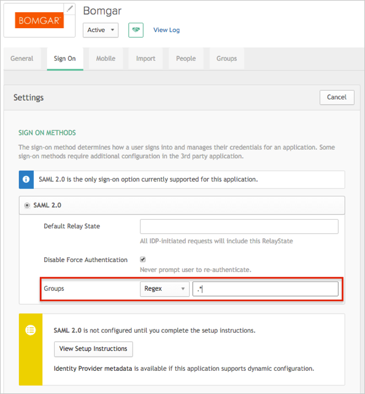
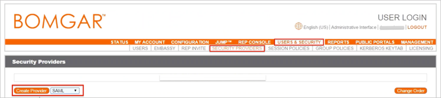
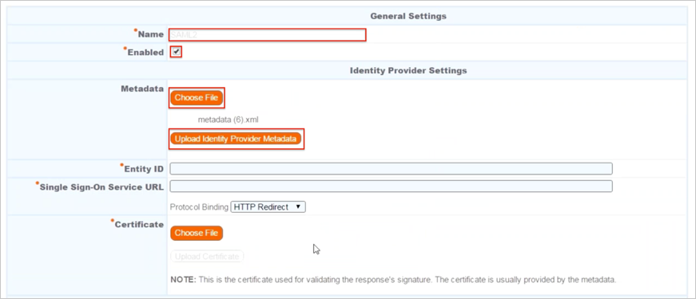
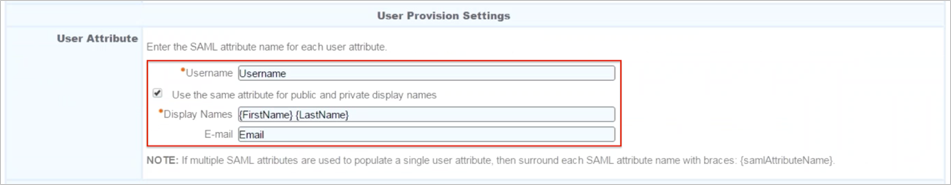
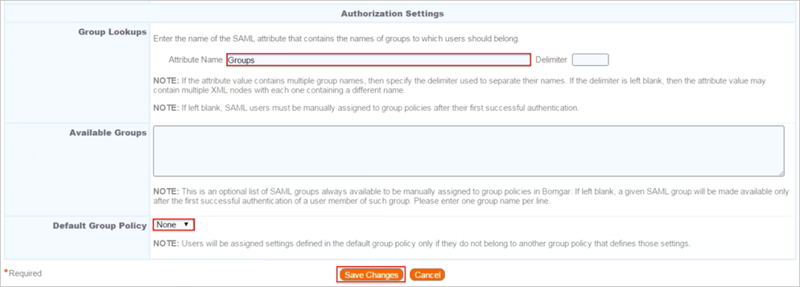
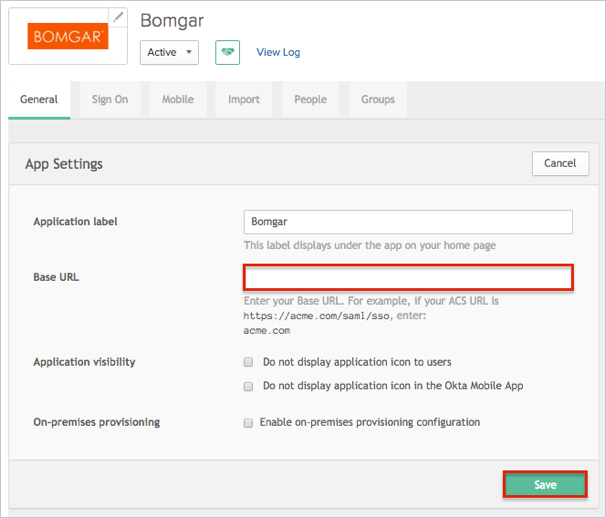
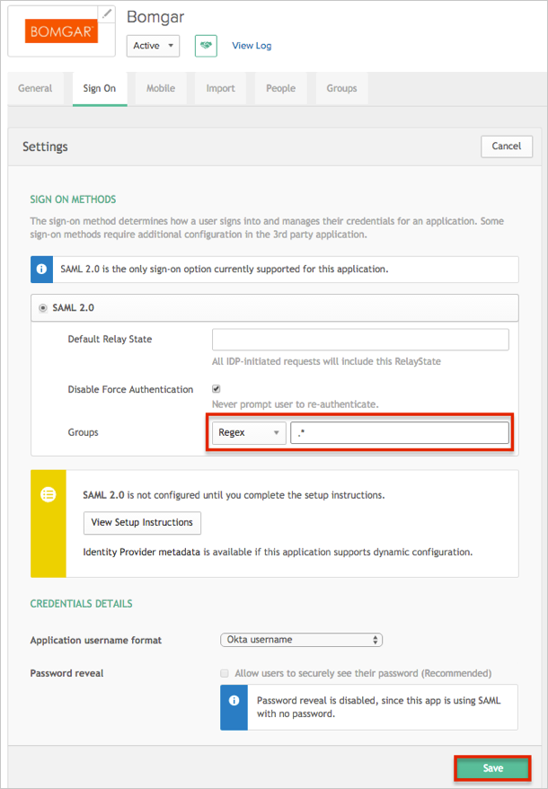
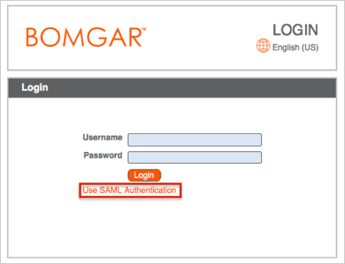

The Bomgar application is pre-configured to pass Groups as part of the SAML assertion. In order to be able to send Groups, your Okta organization needs to have the following feature flag turned on:
SAML_GROUP_ATTRIBUTE
Once this feature flag is turned on, make sure that the Group option is available for the application (Sign On tab):

Login to your Bomgar account as an administrator.
Navigate to USERS & SECURITY > SECURITY PROVIDERS.
Click Create Provider.

The SAML configuration screen appears.
Under General Settings, enter the following:
Name: Enter Okta.
Check the Enabled box.
Copy and save the following as metadata.xml.
Sign in to the Okta Admin app to have this variable generated for you.
Under Identity Provider Settings, enter the following:
Metadata: Click Choose File, then navigate to the metadata.xml file you just saved.
Click Upload Identity Provider Metadata.

Note: Other fields such as Entity ID and Single Sign-On Service URL are populated automatically once the metadata is uploaded.
Wait for a The metadata was successfully uploaded message to appear, then continue with the User Provision Settings below.
Under User Provision Settings, enter the following (use the default values):
Username: Username.
Check the Use the same attribute for public and private display names box.
Display Names: {FirstName} {LastName}.

Under Authorization Settings, enter the following:
Attribute Name: Groups.
Default Group Policy: Select your Default Group Policy from the drop-down list.
Click Save Changes:

In Okta, select the General tab for the Bomgar application, then click Edit:
Enter your Base URL into the corresponding field.
Click Save:

Still in Okta, select the Sign On tab, then click Edit:
Select your preferred Groups filter from the dropdown list.
Note: The Regex rule with the value ".*" in order to send *all* Okta groups to the Bomgar instance we used in our example below.
Click Save:

Done!
Notes:
SP-initiated flows, IdP-initiated flows, and Just in Time (JIT) provisioning are all supported.
For SP-initiated flows:
Open https://[yourBaseUrl]/login/login.
Click the Use SAML Authentication link.
